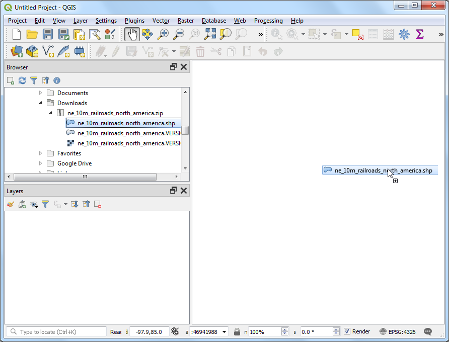
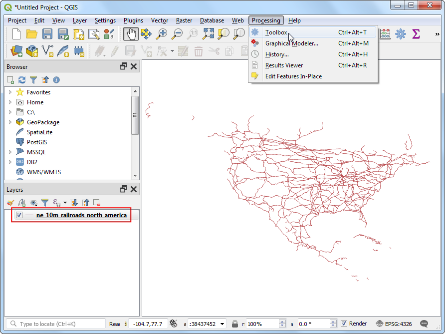
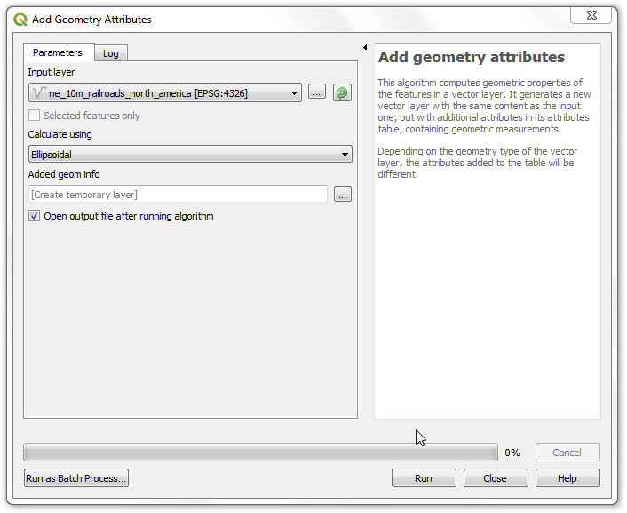
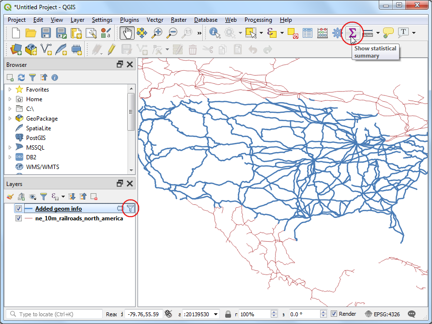
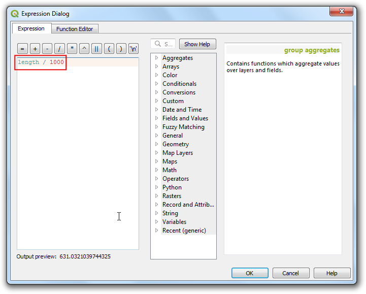

Berechnung der Länge von Linien und Statistiken (QGSI3)¶
QGIS hat integrierte Funktionen, um verschiedene Featureeigenschaften, z.B. Länge, Fläche, Umfang usw., basierend auf dem Geometrietyp des Features zu berechnen. In dieser Anleitung lernt man die Benutzung des Tools Geometrieattribute hinzufügen, um eine Spalte hinzuzufügen, die die Länge jedes Features enthält.
Aufgabenübersicht¶
Mit Hilfe eines polyline layers der Eisenbahnstrecken in Nord Amerika werden wir die Gesamtlänge der Strecken in den USA bestimmen.
Weitere Fähigkeiten, die wir erlernen¶
Ausdrücke verwenden, um Features zu filtern.
Benutzung der Statistik Schaltfläche, um Statistiken für Spalten zu berechnen und anzuzeigen.
Beschaffung der Daten¶
Bei Natural Earth gibt es einen frei verügbaren Datensatz zu Eisenbahnstrecken.
Lade die Zip-Datei North America supplement vom Portal herunter.
Der Einfachheit halber kannst du auch eine Kopie des Datensatzes unter folgendem link herunterladen:
ne_10m_railroads_north_america..zip
Datenquelle [NATURALEARTH]
Arbeitsablauf¶
Suche den heruntergeladenen Datensatz
ne_10m_railroads_north_america.zipim Browser Bereich und entpacke ihn. Ziehe die shape-Dateine_10m_railroads_north_america.shpin den Arbeitsbereich.

Man sieht nun den neuen Layer
ne_10m_railroads_north_america, der im Bereich Layers angezeigt wird. Man sieht, dass der Layer Linien für die Bahnstrecken Nordamerikas enthält. Als nächstes werden wir die Länge jedes einzelnen Linien-Features berechnen. Gehe zu .

Suche und finde den Algorithmus. Starte ihn mit einem Doppelklick.

Wähle im Fenster Geometrieattribute hinzufügen
ne_10m_railroads_north_americaals Eingabelayer. Das Koordinatenreferenzsystem (CRS) des Eingabelayers ist EPSG:4326 WGS84. Das ist ein geographisches Koordinatensystem mit Breite und Länge als Koordinatenwert, WGS84 als Ellipsoid und Grad als Einheit. Da Breiten- und Längengrade keine Standardlängenangaben enthalten, kann man mit Funktionen aus kartesischen Systemen den Abstand oder die Fläche nicht genau berechnen. Zum Glück stellt QGIS durch Nutzung eines Kugelkoordinatensystems einen besseren, d.h. genaueren Weg zur Ermittlung von großen Abständen bereit. WähleEllipsenförmigim Feld Berechne mit. Klicke Starte. Nachdem der Prozess beendet ist, klicke Close.

Bemerkung
Wenn der Eingabelayer in einem projizierten CRS vorliegt, kann man die Layer-KBS Option zur Berechnung auswählen. Lokale oder regionale projizierte Koordinatensysteme werden entworfen, um Verzerrungen im Gebiet zu minimieren; sie sind also für derartige Berechnungen genauer.
Man sieht nun einen neuen Layer
Added geom infoim Bereich Layers. Dies ist eine Kopie des Eingabelayers mit einer zusätzlichen Spalte für die Längenangabe. Klicke mit rechts auf den LayerAdded geom infound wähle Open Attribute Table aus.

Bemerkung
Das Tool Geometrieattribute hinzufügen fügt dem Eingabelayer, abhängig davon ob es sich um Punkte, Linien oder Polygone handelt, verschiedene Attribute hinzu. Unter QGIS documentation findet man weitere Details.
In der Attributtabelle, sieht man eine neue Spalte distance. Diese Spalte enthält die Länge jedes Features in Metern. Beachte auch das Attribut sov_a3, das den Ländercode für jedes Feature enthält. Schließe nun das Fenster der Attributtabelle.

Da wir jetzt die Längen der einzelnen Features kennen, können wir diese aufsummieren und so die Gesamtlänge der Eisenbahnstrecken herausfinden. Da aber die Problemstellung ist, nur die Länge der Eisenbahnstrecken in den USA zu ermitteln, dürfen wir nur diese Streckenlängen aufsummieren. Wir können den Wert des Ländercodes in der Spalte sov_a3 zum Filtern des Layers verwenden. Klicke mit der rechten Maustaste auf den Layer
Added geom infound wähle Filter.

Gib nun folgenden Ausdruck im Fenster Query Builder ein und klicke auf OK.
"sov_a3" = 'USA'
Man sieht nun ein Filter Icon neben dem
Added geom infoLayer im Layers Bereich, der anzeigt, dass ein Filter auf den Layer angewendet wird. Man kann außerdem sehen, dass der Layer jetzt nur noch die Eisenbahnlinien der USA darstellt. Jetzt sind wir soweit, die Streckenlängen aufzusummieren. Klicke auf den Knopf Show statistical summary auf der Attributes Toolbar.

Es öffnet sich ein neuer Bereich Statistics. Wähle den
Added geom infoLayer und die Spaltelengthaus.

Es werden verschiedene Statistiken angezeigt. Die Einheit der Statistiken ist dieselbe wie die der
lengthSpalte - Meter. Wir können die Berechnung auch in Kilometer durchführen. Klicke auf das Expression Icon neben der Feldauswahl im Statistics Bereich.

Gib folgenden Ausdruck, der die Längenangabe nach Kilometer umrechnet, im Fenster Expression Dialog ein.
length / 1000
Der unter Sum angezeigt Wert entspricht der Gesamtlänge der Eisenbahnstrecken in den USA.

If you want to give feedback or share your experience with this tutorial, please comment below. (requires GitHub account)